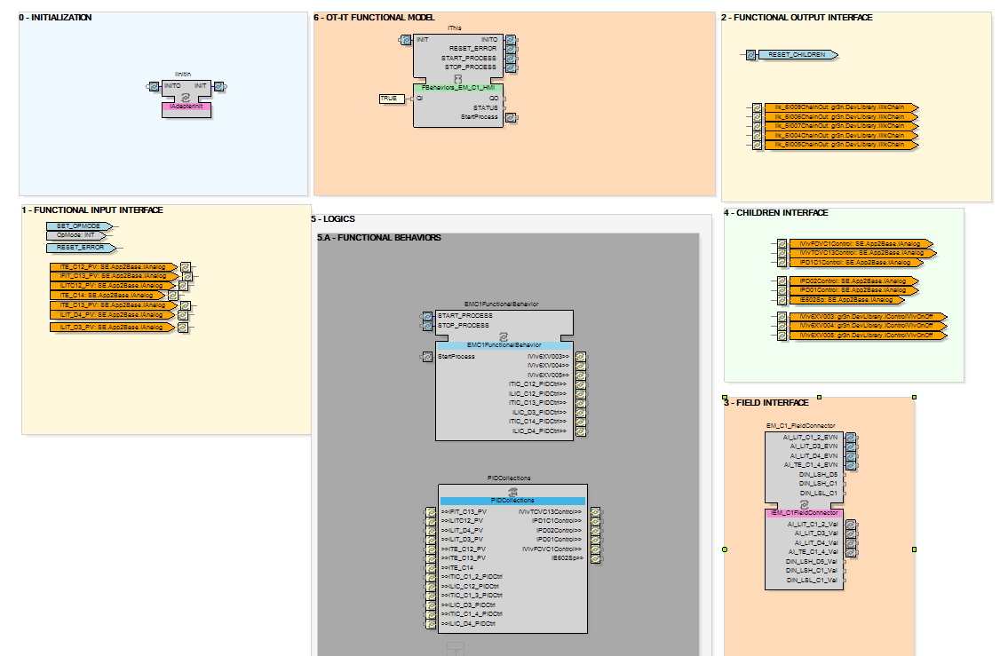

As detailed in the design guideline, the functional behavior is an essential component defining the system's intelligence.
This component operates as the system's functional orchestrator, effectively processing input values from the field and applying the control strategy to control all equipment and associated underlying sub-systems, for an optimal performance and reliability.
This sub-sequence step then develops the logic to execute the use case processes by establishing connections between the previously defined sub-sequences (equipment modules and field interface).
In this use case, there are series of variable-speed motors and a control valve. All require management through PID control functions. Thus, let’s employ these PID function block as primary means for controlling the equipment.
To enhance the effectiveness of this implementation, let’s leverage an existing adapter to establish a connection between the PID CAT object and the controlled equipment. Also, let’s employ the existing adapter from the AI function block. This adapter enables the seamless transfer of the process variable (PV) value from the input of the appropriate PID function block.
Additionally, let’s activate the PID function block only when the specified conditions for the plant are met, with verification conducted by the Operator. Functionally, this use case has been implemented by leveraging the ‘Ithis’ component of the CAT object, which includes two key events to signify the execution of this object: START_PROCESS and STOP_PROCESS.
Finally, let’s developed the Basic function block object, which enables the connection of various components through an adapter, allowing for functional control in accordance with the mode specified by the Operator.
